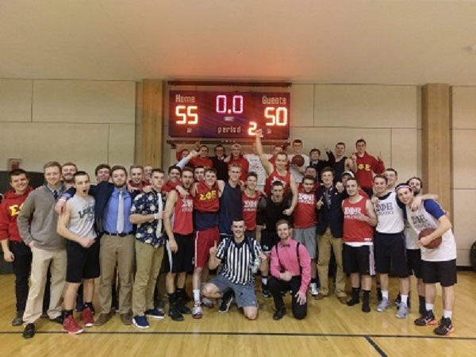

BUA 235- Joe Clark
BUA 235- Joe Clark
This is by far my favorite sport to play on a regular basis. I've played ever since I was 4, and I still play today in intramurals with my Fraternity team. In high school my team made it to playoffs two years and my senior year we made it to the Eastern Maine Championship but lost in overtime.
In college, I made most of my friends on the basketball court my first semester and continue to build friendships on the court. When I joined SigEp, I was put on their A basketball team and we continue to be one of the top teams in the Fraternity League, just winning the 2017 Championship against Pi Kappa Phi in double overtime.
My father said that this was the sport I was best at, and I would mostly agree with him. I played practically every position, but was mostly a pitcher, shortstop, and outfielder. The only position I never played in high school was 1st base.
After high there aren't many opportunities to play baseball except in professional leagues, but I did start playing slow-pitch softball in Men's Leagues during the summer and in Fraternity intramural sports here at UMaine.
I joind this sport halfway through high school and I regretted immediately not starting earlier because I quickly excelled in running. I made it to states my first year and was able to get my 5k time down to 19:24 my first year, and the next year down to 18:11.
After high school, I continued to run for fun and ran in lots of local 5k races in Aroostook County and in Orono at the Healthy High 5k where I've placed 11th two years in a row and ran it in just below 19:00.